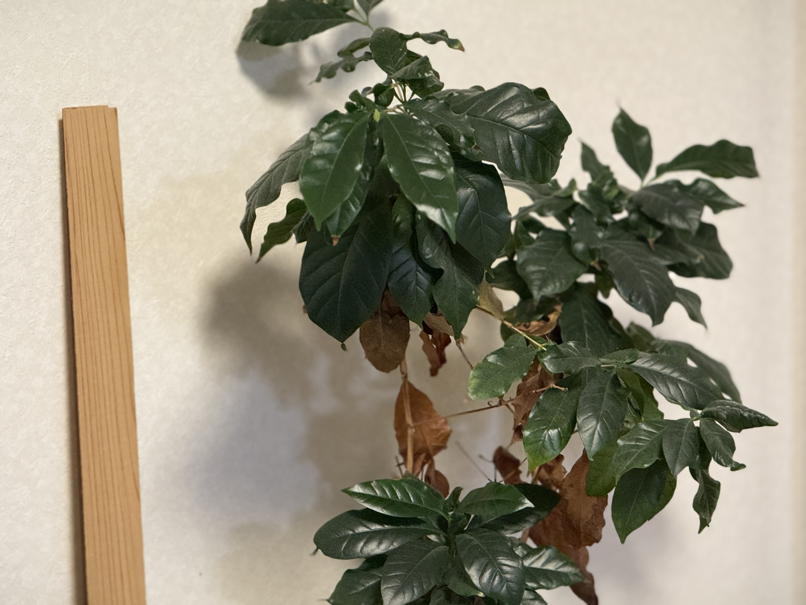
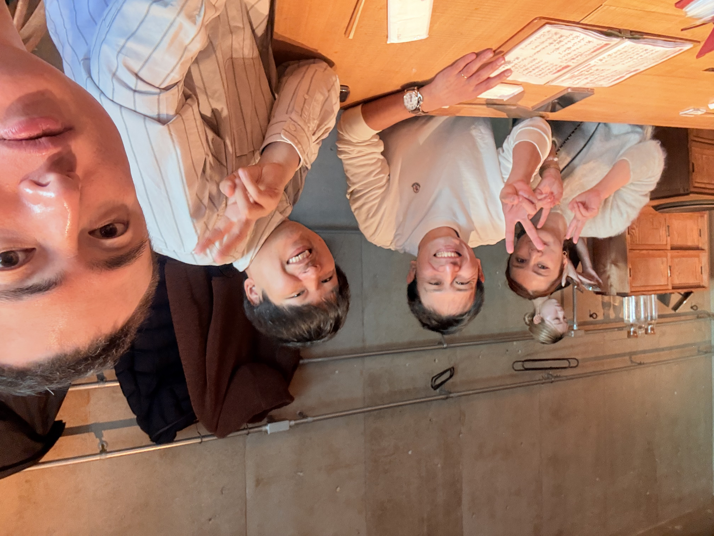

鹿児島県
出身地です。自然が多く、食べ物もおいしい場所です。
ABOUT ME
こんにちは、ジュンです。
現在、プログラミングを勉強している学生です。
このページは、HTMLとCSSの練習として作成しました。
まだ初心者ですが、少しずつできることを増やしながら、
これからもっと学んでいきたいと思っています。
普段の授業では伝わりにくい趣味や好きな作品、 写真などを通して、自分のことを知ってもらえたらうれしいです。
名前：ジュン
出身：鹿児島県
現在：福岡県で生活しています
勉強中：HTML・CSS・Pythonなど
PLACES
出身地です。自然が多く、食べ物もおいしい場所です。
水郷の景色が印象的な場所です。
海が近く、景色のきれいな場所です。
現在生活している地域です。
MY PHOTOS
スマホの写真を絞り出してみました。

現在育てている観葉植物です。
少しずつ成長する様子を見るのが楽しみです。
そろそろ植え替えの時期かもしれません。

数年前に東京を訪れたときの一枚です。
人の多さや街の活気に圧倒されました!

建物のデザインがとても印象的でした。
時間が限られていたので外観だけ撮影しました。
次はゆっくり見学してみたいです。

散歩中に見つけたお気に入りの並木道です。
新緑もきれいですが、紅葉の季節も楽しみにしています。

高い場所から見た景色です。
高い所は少し苦手ですが、思わず撮影したくなる景色でした。

一緒に頑張ってきた戦友との一枚です。
良い思い出として残っています。
HOBBY
FAVORITE WORKS
ジャンルをクリックし、次に作品名をクリックしてください。
感想：「夢を追うのに年齢は関係ない」というメッセージが心に残る作品です。周囲への感謝を忘れず、夢に挑戦し続ける主人公の姿に勇気をもらい、「今からでも遅くない」と前向きな気持ちになれる映画でした。
内容：『世界最速のインディアン』は、63歳のバート・マンローが愛車「インディアン」で世界最速記録に挑戦する実話です。困難に負けず、夢を追い続ける姿が描かれた感動の映画です。
感想：ユーモアと冒険が絶妙で何度も楽しめます。
内容：海賊ジャック・スパロウが伝説の財宝や呪いに挑みます。
感想：カーアクションの迫力と仲間の絆が魅力です。
内容：車を愛する仲間たちが危機へ立ち向かいます。
感想：登場人物の関係や心情の変化が印象的です。
内容：孤独な殺し屋と少女が心を通わせていく物語です。
感想：映像が美しく、静かな世界観が魅力です。
内容：地球最後の保守員が世界の秘密を知っていきます。
感想：独創的な世界観とアクションが好きです。
内容：世界の秘密を知った主人公が支配する存在へ立ち向かいます。
感想：SFとコメディのバランスが良く、何度見ても楽しめます。
内容：宇宙人を秘密裏に管理するエージェントたちの物語です。
感想：何度見ても楽しめる名作です。
内容：高校生がタイムマシンで過去へ移動します。
感想：重い雰囲気と緊張感が強く印象に残ります。
内容：二人の刑事が連続事件を追うサスペンス作品です。
感想：物語の見え方が変わる展開が印象的です。
内容：変化のない生活に悩む男性が秘密の集まりを始めます。
感想：主人公が少しずつ変わっていく姿が印象的で、善悪について考えさせられる作品でした。緊張感のある展開が続き、最後まで引き込まれる名作です。
内容：余命宣告を受けた高校の化学教師が、家族のために違法薬物の製造へ手を染め、次第に犯罪の世界へ深くのめり込んでいく物語です。
感想：ハッキングだけでなく、人間の心理や社会問題も深く描かれており、最後まで展開が読めない作品でした。考えさせられる場面が多く、見応えのあるドラマです。
内容：天才的なハッカーの主人公エリオットが、巨大企業を相手にサイバー攻撃を仕掛け、社会を変えようとするサスペンスドラマです。
感想：SNSの華やかな世界の裏側や、人間関係の怖さをリアルに描いた作品でした。人気やフォロワー数だけでは測れない本当の価値を考えさせられ、最後まで展開が読めない作品でした。
内容：平凡な女性がSNSをきっかけに人気インフルエンサーとなり、華やかな世界へ飛び込む物語です。しかし、その裏には嫉妬や裏切り、欲望が渦巻いており、SNS社会の光と闇が描かれます。
感想：圧倒的なカリスマ性と成功の裏にある光と闇が印象的でした。人の欲望や権力の怖さを考えさせられる作品でした。
内容：「地獄に堕ちるわよ！」の決め台詞で一世を風靡した占い師・細木数子の人生をモデルに、成功の裏にある欲望や人間関係、数々の真実を描いたヒューマンドラマです。
感想：ブランド品の価値だけでなく、人の欲望や見栄の怖さを考えさせられる作品でした。先の読めない展開が続き、最後まで引き込まれるドラマです。
内容：高級ブランドの世界で別人として生きる女性の秘密と、殺人事件の真相を描いた韓国ミステリーです。本物と偽物、欲望や嘘が交錯するサスペンスが展開されます。
感想：チェスを知らなくても楽しめる作品でした。努力と成長、仲間の支えの大切さが描かれており、最後まで夢を追い続ける主人公の姿に勇気をもらえる感動作です。
内容：孤児院で育った少女ベスが、天才的なチェスの才能を開花させ、さまざまな困難や葛藤を乗り越えながら世界一を目指す物語です。
感想：先の読めない展開と社会問題を織り交ぜたストーリーが魅力です。謎が少しずつ明らかになる展開に引き込まれ、考察も楽しめる作品でした。
内容：記憶を失った青年・滝沢朗が、日本を救う使命を託された「セレソン」として、仲間とともに巨大な陰謀へ立ち向かうサスペンス作品です。
感想：近未来の世界観と考えさせられるテーマが魅力です。
内容：公安組織がサイバー犯罪へ立ち向かいます。
感想：正義や社会の仕組みについて考えさせられます。
内容：人の心理状態を数値化する社会で刑事たちが犯罪を追います。
感想：美しい映像と繊細な心理描写が心に残る作品です。一人ひとりの想いが丁寧に描かれ、思わず涙する場面も多い感動作でした。
内容：戦争で感情を知らずに育った少女ヴァイオレットが、手紙の代筆を通して人々の想いに触れ、「愛してる」の意味を探していく物語です。
感想：ロボットアニメの枠を超えた心理描写と哲学的なテーマが魅力です。見る人によって解釈が変わるほど考察要素が多く、何度見ても新しい発見がある名作だと感じました。
内容：人類を襲う「使徒」に対抗するため、少年たちがエヴァンゲリオンに乗り戦います。戦いを通して、それぞれの心の葛藤や人類の運命が描かれます。
感想：頭脳戦や心理戦が特に好きです。
内容：少年ゴンが仲間と冒険する物語です。
感想：迫力ある戦闘や仲間との成長、熱い人間ドラマが魅力です。夢に向かって努力する姿に勇気をもらえる作品です。
内容：戦災孤児の少年・信が、天下の大将軍を目指し、後の始皇帝となる嬴政（えいせい）とともに中華統一を目指す物語です。
感想：ゴルフの才能を持つ少年・ガウェインが、仲間やライバルと切磋琢磨しながら世界一のプロゴルファーを目指して成長していく物語です。
内容：個性豊かなライバルたちとの熱い勝負や成長する姿が魅力です。ゴルフを知らなくても楽しめる、爽快感のあるスポーツアニメです。
感想：迫力ある銃撃戦と個性豊かな登場人物が魅力で、ハードな世界観に引き込まれました。ロックの成長や葛藤も見どころです。
内容：日本の会社員ロックが運び屋チーム「ラグーン商会」の一員となり、犯罪都市ロアナプラで危険な依頼や裏社会の抗争に巻き込まれていくガンアクション作品です。
感想：迫力ある戦闘シーンだけでなく、武器や平和について考えさせられる奥深い物語でした。個性的な仲間たちとのやり取りも魅力です。
内容：武器商人ココ・ヘクマティアルと、その護衛部隊、そして武器を憎む元少年兵ヨナが世界各地を巡り、戦争や国際情勢に関わる任務を描くガンアクション作品です。
感想：美しい世界観と予想を超える展開が印象的です。
内容：巨大な縦穴の深部を目指して冒険します。
感想：自然の景色と穏やかな雰囲気が心地よい作品です。
内容：女子高校生たちが各地でキャンプを楽しみます。
FAVORITE MUSIC
最近よく聴く曲から、年代別・ジャンル別にまとめました。
MY GOAL
まずはHTML・CSS・Pythonなどの基礎を身につけ、 自分で考えたものを形にできるようになることが目標です。
将来はAIやプログラミングの知識を活用し、 人の役に立つサービスや仕組みを作れるようになりたいです。